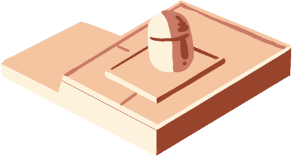

Explora las maravillas de este fascinante lugar y descubre sus
secretos ocultos. Haz clic en cualquiera de los nombres para aprender
más sobre los sitios.
Ruge como un jaguar mientras descubres los secretos de este
templo. Los mayas creían que este lugar tenía poderes
especiales. ¿Puedes encontrar al jaguar tallado en piedra
escondido?

¡Gira y da vueltas como una concha en espiral dentro de esta
misteriosa torre! Los mayas la usaban como su lugar especial
para observar el cielo. Sus ventanas se alinean perfectamente
con las estrellas y planetas. ¿Puedes descubrir por qué la
nombraron como un caracol?
¡Asómate a las aguas mágicas de este gigantesco pozo natural!
Los mayas creían que el dios de la lluvia Chaac vivía aquí.
Lanzaban tesoros preciosos al agua como ofrendas. ¿Puedes
imaginar qué tesoros podrían seguir escondidos en sus
profundidades?
¡Cuenta tan alto como puedas entre este bosque de columnas de
piedra! Los líderes mayas celebraban importantes reuniones
bajo estos imponentes pilares. Cada columna cuenta una
historia con sus tallas especiales. ¿Cuántas columnas crees
que hay realmente?
¡Marcha como un valiente guerrero maya por este increíble
templo! Cientos de soldados de piedra protegen este lugar
especial. Observa de cerca las coloridas tallas que muestran
antiguas batallas y héroes. ¿Puedes encontrar la serpiente
emplumada escondida entre los guerreros?
¡Acércate a las estrellas con esta plataforma especial! Los
mayas eran increíbles observadores del cielo que seguían al
planeta Venus. Construyeron esta plataforma para observar su
viaje por el cielo nocturno. ¿Puedes encontrar los patrones de
estrellas tallados en las piedras?
 ESP
ESP